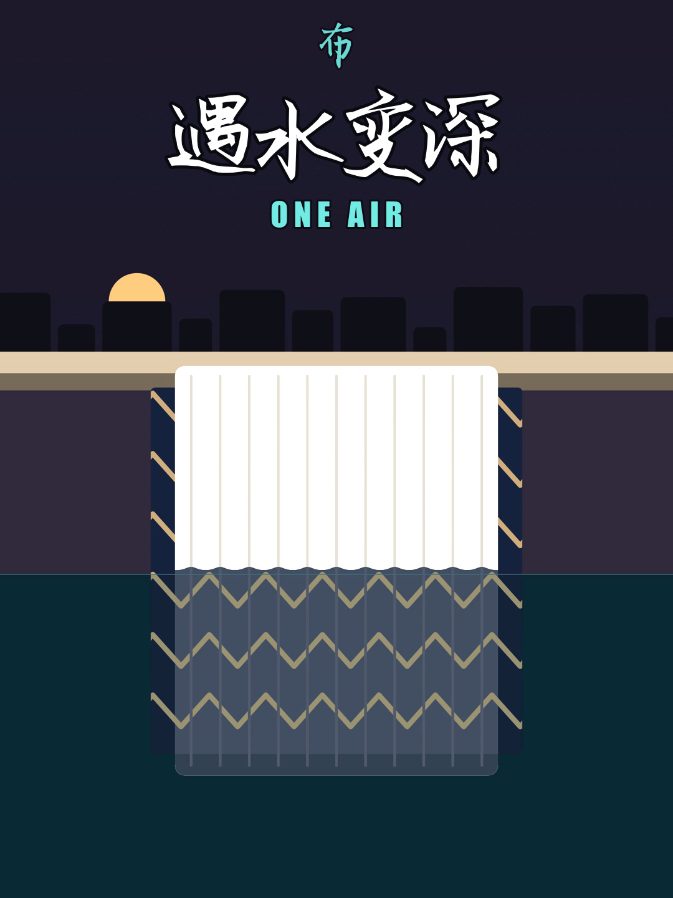

统一片库与多封面满配
四条制作线汇入唯一 00_发布库。「平台有几个封面位就上几个」（抖音 3:4+4:3、B站 4:3+16:9、其余 3:4），声明统一选「内容无需标注」。
MR. TOSWIM · DOMESTIC SEVEN PLATFORMS
国内7平台（小红书、抖音、快手、B站、微信视频号、淘宝点淘、京东逛视频）与海外6平台共用唯一发布库、统一准入与唯一总台账。本站统筹国内七平台的新片核验、定期清理降权/低播视频、按七大主题合集标准化归档，以及日常挂车、增删话题与文案迭代。
工作方式：前期按主理人指令逐条精准执行；后期梳理完定期整理类型后设定自动化任务（启用及任何删帖操作前均须先经主理人明确确认）。

四条制作线汇入唯一 00_发布库。「平台有几个封面位就上几个」（抖音 3:4+4:3、B站 4:3+16:9、其余 3:4），声明统一选「内容无需标注」。
定期筛查被平台降权、判定违规或播放量极低的视频（经确认后清理）；按七大主题合集归档，让消费者3秒内找到想看的系列视频。
常态化执行后续商品上架（挂车）、增删话题胶囊、优化标题与笔记文案；国内与海外十三平台状态统一汇入唯一总台账。
01 / DOMESTIC OPERATING SNAPSHOT
数据源自唯一总台账（_发布中枢_交接.md）最新实锤 +1 核验记录，严禁虚报或将草稿计为已发。
加载批次核验口径…
最新作品 299_TOSWIM_雪蝶云影 已完成小红书（481→482）、抖音（393→394，3:4+4:3双封）、快手（181→182）、B站（83→84，BV1YbxJ6LE7U，4:3+16:9双封）、视频号（420→421）、淘宝点淘（2723→2724，ID: 2463306457929670）、京东逛视频（ID: 1374953724，视频 4918049643）全链路核验。
京东逛视频采用「0/10 挂件先秒过公域内容审核 → 后续按日常操作指令定向补挂自营商品 SKU」的双步稳健策略。
本站点源码位于 sites/founder-domestic-operations/site，与海外六平台站在目录结构、脚本接口与数据白名单上 1:1 完全同构。无论由 AG 还是 CG 值班，均可一行命令完成更新。
当前同时分发至：① 飞书妙搭（Miaoda）、② GitHub Pages（TOSWIM 官方库）、③ CG 原生站点（.chatgpt.site），跑一段时间后择优定型。
02 / SEVEN PLATFORM ROLES & SOP
点击下方平台标签，查看各平台的账号身份、封面尺寸要求、合集承载形式、定期清理关注点与日常挂车/改稿规范。
TOSWIM 标识 100% 使用官方标准版定制斜切 LOGO；② 平台有几个封面位就上几个（严禁只传单封面敷衍）；③ 创作者声明统一选择「内容无需标注」（不主动标 AI 生成，也不选自主拍摄）；④ 必带话题胶囊并 @TOSWIM官方旗舰店。03 / VIDEO CURATION & COLLECTION SYSTEM
随着国内七平台在架视频突破 4,300+ 条，「存量资产精益整理」与「前端新片发布」同等重要。以下三大工作流由主理人指令驱动，后期梳理定型后可升级为经授权的定期自动化任务。
SEVEN STANDARDIZED COLLECTIONS · 合集归档蓝图
无论消费者从哪条爆款视频进入主页，都能通过清晰分类的「平台合集 / 个人专辑 / 空间系列」顺畅连播同主题内容，大幅提升主页停留时长与进店转化率。
04 / SHARED AUTHORITATIVE LIBRARY
国内七平台与海外六平台共用唯一权威片库（00_发布库）。四条制作线交付的成品经统一准入后，既供国内七平台发布与合集归档，也直接供海外六平台复用。
ONE LIBRARY · FULL LIFECYCLE
05 / CONTENT SYSTEM & STANDARDS
前端内容矩阵围绕四大支柱展开，后端归档时精确映射至七大主题合集，形成「前端破圈获客 → 主页合集留存 → 挂车进店转化」的商业闭环。
DESIGN & HARDCORE GEAR
拆解防雾分子层、密封眼罩人体工学、变色龙泳衣织物科技，让专业装备溢价有据可依。
BRAND & SIX-LETTER ART
以官方定制斜切 T·O·S·W·I·M 六个字母为视觉母题，延伸到东方水墨高定画报与超模演绎系列。
PSYCHOLOGY, ECON & BRAIN
以主理人泳镜侠动画形象，在40秒内讲透一个心理学效应、经济学规律或神经科学机制。
PRODUCT TEST & WATER LIFE
W系列电商双视角测款、干态上岸大片与湿态出水特写，直接承接点淘、京东与小红书种草转化。
TOSWIM 官方标准版斜切 LOGO，严禁使用 AI 手绘假字体。3:4 竖封 (1080×1440) + 4:3 横封 (1440×1080)；B站必传 4:3 推荐封面 + 16:9 个人空间封面；小红书/快手/视频号/点淘/京东上传 3:4 竖封。#TOSWIM #拓胜 #游泳装备）并成功挂载 @TOSWIM官方旗舰店，杜绝纯文本死字。06 / VERIFICATION LEDGER & RHYTHM
每次操作严格遵循「先查重 → 满配上传/改稿 → 实锤核验（基数+1 / BV号 / 内容ID） → 回写唯一总台账」四步铁律。
07 / MEASURE, CLEANUP CRITERIA & BOUNDARIES
把「什么视频该留、什么视频该进合集置顶、什么视频该列入待清理清单」的标准讲透，确保每一次整理都有据可查。
0 违规限流、0 重复废片、双封面与话题胶囊 100% 达标率。
追踪单条播放峰值（如视频号237破20.9万）、收藏率及合集点击连播深度。
点淘、京东逛视频、抖音橱窗与小红书商品组件的点击率及求购评论承接。
| 平台 | 当前在架基数 | 合集归档形式 | 定期清理重点关注 | 日常操作（挂车/话题/改稿）支持度 |
|---|---|---|---|---|
| 小红书 | 482 篇 | 个人主页专辑（7大主题专辑） | 审核未通过、低赞低藏（<30天底部5%）及早期无封面旧帖 | 支持编辑笔记正文/标题/话题、更换封面及关联小红书店铺商品 |
| 抖音 | 394 条 | 创作者合集（支持连播与置顶） | 不适宜公开、仅自己可见、同片重复上传及极低完播旧帖 | 支持补传 3:4+4:3 双封面、归入合集、挂载购物车及修改标题话题 |
| 快手 | 182 条 | 快手剧集 / 作品合集 | 封面拉伸变形旧帖、审核异常及零互动长尾旧视频 | 支持二次编辑封面与描述、归入剧集及挂载小店商品链接 |
| B站 (哔哩哔哩) | 84 稿 | Lv2 官方视频合集 + 空间置顶 | 早期单比例封面稿件（可补4:3+16:9双封）、退回稿件 | 支持随时修改稿件标题/简介/标签、更换双封面及拖拽调整合集顺序 |
| 微信视频号 | 421 条 | 主页合集标签页 | 转发/推荐受限视频、早期测试废片（保护237等20.9万+高播资产） | 支持归入主页合集、置顶核心代表作、关联视频号小店商品组件 |
| 淘宝·点淘 | 2,724 条 | 店铺逛逛分类与主推商品聚合 | 历史失效商品关联视频、审核驳回及零展现沉底视频（体量最大，分批筛查） | 核心挂车阵地：支持绑定官旗/游泳先生主推商品ID、优化种草标题 |
| 京东·逛视频 | 18 批 (自营公域) | 自营旗舰店内容频道 | 未过公域审核或状态异常稿件 | 采用「0挂件先过公域审核 → 审核通过后补挂自营SKU挂件」标准流程 |
无论是定期清理筛查出的低播放视频，还是疑似降权/重复视频，智能体只能先生成《待清理视频诊断清单》呈报主理人，必须拿到主理人明确同意指令后方可点击删除。
同样，涉及花钱投流、修改账号核心设置、覆盖飞书原有文档的操作，一律先请示后执行。
凡单平台播放量破万、高收藏率或主理人点名代表作（如视频号 20.9万+ 播放的 237、代表作 242 泳衣遇水变深、最新高定画报系列 270–275 与 299），自动列入白名单保护锁，优先设为主页置顶与合集首集。
08 / THREE-WAY SYNC & LIVING PLAN
本站点采用「单一本地权威源码底座 + 飞书妙搭、GitHub Pages、CG原生站三端同步推送」架构，跑一段时间后由主理人择优定型。
sites/founder-domestic-operations/MAINTENANCE.md 与 domestic-operating-plan-site.json，调用原生工具秒级更新。sites/founder-overseas-operations/MAINTENANCE.md，运行同一套 sync-content.py 并同步三端。维护节奏：随每次视频整理（清理/归档/日常操作）与发布核验任务同步刷新本地底座并一键推送三端。